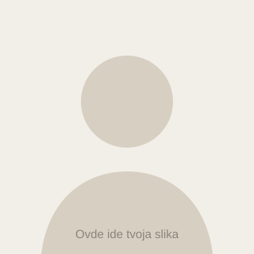

🌐
Lični sajt
Moj prvi korak u web svetu: sajt napravljen u VS Code-u uz Claude Code, koji se automatski objavljuje na internetu pri svakoj izmeni.
Upravo ga gledaš →Zdravo, ja sam
Mašinski tehničar · CNC operater
Radim na CNC mašinama za obradu stakla i metala. Volim precizan posao, gde se greška meri stotim delovima milimetra, a rezultat se drži u ruci.

Po struci sam mašinski tehničar. Radio sam kao CNC operater na obradi stakla i metala: od čitanja tehničkog crteža i pripreme programa, preko podešavanja mašine i alata, do kontrole gotovog komada.
U poslu mi je najvažnije da stvari budu urađene tačno i bezbedno. Volim da razumem kako mašina radi, a ne samo da pritisnem „start". Zato stalno učim nešto novo, pa sam tako napravio i ovaj sajt.
Rad na CNC mašini za obradu stakla: sečenje, brušenje ivica i bušenje po meri. Podešavanje alata, praćenje procesa i kontrola dimenzija gotovih komada.
Obrada metalnih delova prema tehničkom crtežu. Unos i korekcija programa, izbor i zamena alata, merenje pomičnim merilom i mikrometrom.
Tehničko crtanje, mašinski elementi, tehnologija obrade i osnove CNC programiranja.
Moj prvi korak u web svetu: sajt napravljen u VS Code-u uz Claude Code, koji se automatski objavljuje na internetu pri svakoj izmeni.
Upravo ga gledaš →Izrada staklenih ploča nestandardnih oblika sa brušenim ivicama i otvorima, za nameštaj i enterijer.
Podešavanje mašine i programa za seriju delova, tako da svaki komad bude u toleranciji uz što manje škarta.
Rekreativno sa ekipom jednom nedeljno — i navijanje vikendom.
Najbolji način da se isključim i razmislim na miru.
Strategije i igre sa dobrom pričom.
Volim da otkrivam manja mesta i lokalnu kuhinju.
Da li znaš? Staklo se na CNC mašini ne seče „na suvo". Alat se sve vreme hladi vodom, inače bi ivica napukla.
Imate posao, pitanje ili ponudu? Javite se, odgovaram brzo.